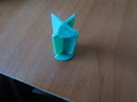

Со скуки сварганил такую вот гранату.
Корпус гранаты - жестяная банка 200 мл.
Корпус взрывателя - 25 мл шприц.
Сначала у шприца заплавляем носик и обрезаем упоры для пальцев.
Далее делаем фитиль. Лучше конечно использовать виско фитиль.
Вырезаем кусочек поршня шприца, как показано на рисунке.
Обрезаем сам поршень.

Вырезанный в самом начале кусочек припаиваем обратно, это упор для фитиля.
Далее делаем прорези для тёрки. С двух сторон, надрезы делать пилкой по металлу, прорези получаются в самый раз.
Частично собираем взрыватель. Запрессовываем заряд, вставляем поршень и фитиль.
ВНИМАНИЕ фитиль обязательно плотно,
ОЧЕНЬ ПЛОТНО, обмотать ватой, если не хотите подорваться.
Делаем чеку. Нужна прочная, нетянущаяся ткань. Я с труселей бирку отрезал, в самый раз

Отклеиваем тёрку от спичечного коробка, без деревяшки само собой. И склеиваем эти 2 элемента суперклеем. Ищем прочную верёвку и пришиваем к тёрке. Из электрода выгибаем колечко и привязываем к нему тёрку.
Берём остатки от поршня и отрезаем кругляшок, на который давят. обтачиваем, чтобы входил в шприц.
Вкладываем его туда, соответственно. Не забудьте вставить тёрку сначала.
Потом нужна пружина. Вместо пружины я использовал сплэн. Пойдёт любой материал с похожей структурой.
Нарезаем из сплэна кругляшки и вкладываем внутрь, почти вровень с концом шприца. Поджимаем всё это дело большой гайкой и скрепляем скотчем.
Всё, взрыватель готов.
Вырезаем в крышке корпуса дыру, чтобы плотнячком взрыватель вошёл. Вставляем его туда и обмазываем холодной сваркой. Лишнего не намажьте, а то крышка не закрутиться.
Засыпаем основной заряд и можно идти на полигон. Если в кач-ве заряда используется ВВ, то нужно иметь две крышки. С одной, обыкновенной, транспортируем гранату, а из второй сделать взрыватель.
Что у меня получилось. Вместо заряда пару грамм карамельки. Замедление - 6 секунд.
http://youtu.be/y9GHP_Zvxdg